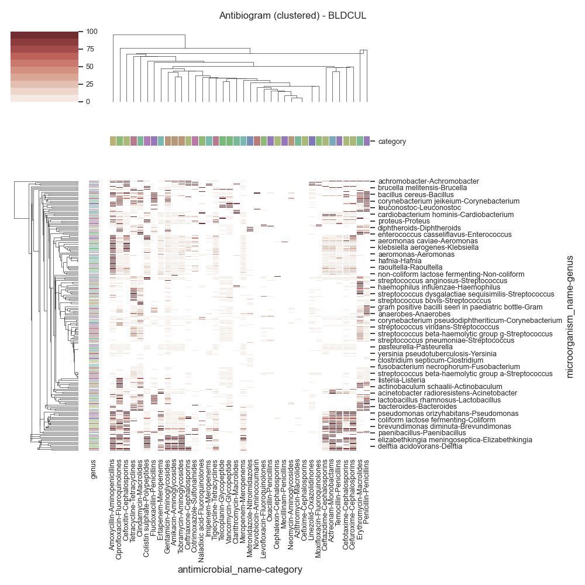
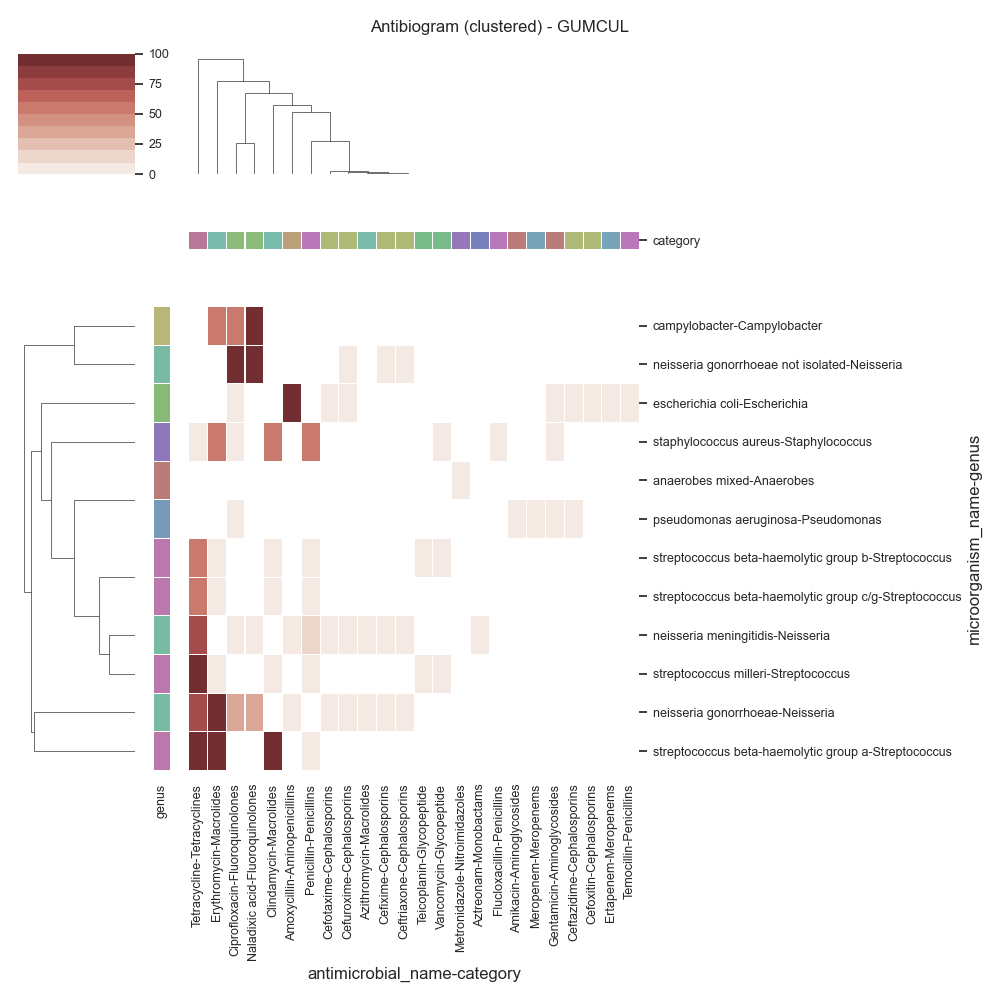

Note
Click here to download the full example code
SARI - Antibiogram (clustered)¶
Todo
Explain and Simplify
- 
- 
Out:
SARI (overall):
sensitivity P intermediate resistant sensitive freq sari
specimen_code microorganism_name antimicrobial_name
ABSCESS Achromobacter species Cefepime 0.0 0.0 1.0 0.0 1.0 1.0000
Ceftazidime 0.0 1.0 0.0 0.0 1.0 1.0000
Ceftriaxone 0.0 0.0 1.0 0.0 1.0 1.0000
Ciprofloxacin 0.0 0.0 0.0 1.0 1.0 0.0000
Gentamicin 0.0 1.0 0.0 0.0 1.0 1.0000
... ... ... ... ... ... ...
URINE Viridans streptococci Clindamycin 0.0 2.0 0.0 8.0 10.0 0.2000
Erythromycin 0.0 0.0 4.0 6.0 10.0 0.4000
Levofloxacin 0.0 0.0 0.0 1.0 1.0 0.0000
Penicillin g 0.0 2.0 0.0 9.0 11.0 0.1818
Vancomycin 0.0 0.0 0.0 11.0 11.0 0.0000
[4307 rows x 6 columns]
Data (ABSCESS)
antimicrobial_name Amikacin Ceftazidime Ceftriaxone Cefuroxime Ciprofloxacin ... Meropenem Oxacillin Tetracycline Tobramycin Vancomycin
category Aminoglycosides Cephalosporins Cephalosporins Cephalosporins Fluoroquinolones ... Meropenems Penicillins Tetracyclines Aminoglycosides Glycopeptide
microorganism_name genus ...
Achromobacter species Achromobacter 0 100 100 0 0 ... 100 0 0 0 0
Acinetobacter baumannii Acinetobacter 0 0 0 0 0 ... 0 0 0 0 0
Actinomyces israelii Actinomyces 0 0 0 0 0 ... 0 0 0 0 0
Actinomyces odontolyticus Actinomyces 0 0 0 0 0 ... 0 0 0 0 0
Aeromonas species Aeromonas 0 0 0 0 0 ... 100 0 0 0 0
... ... ... ... ... ... ... ... ... ... ... ...
Streptococcus milleri group Streptococcus 0 0 0 0 0 ... 0 0 0 0 0
Streptococcus pneumoniae Streptococcus 0 0 0 0 0 ... 0 0 50 0 0
Streptococcus sanguinis Streptococcus 0 0 0 0 0 ... 0 0 0 0 0
Streptococcus species Streptococcus 0 0 0 0 0 ... 0 0 0 0 0
Viridans streptococci Viridans 0 0 0 0 0 ... 0 0 0 0 0
[71 rows x 16 columns]
c:\users\kelda\desktop\repositories\virtualenvs\venvpy39-datablend\lib\site-packages\seaborn\matrix.py:1216: UserWarning:
``square=True`` ignored in clustermap
Data (BLOOD CULTURE)
antimicrobial_name Amikacin Ceftazidime Ceftriaxone Cefuroxime ... Oxacillin Tetracycline Tobramycin Vancomycin
category Aminoglycosides Cephalosporins Cephalosporins Cephalosporins ... Penicillins Tetracyclines Aminoglycosides Glycopeptide
microorganism_name genus ...
Abiotrophia/granulicatella species Abiotrophia/granulicatella 0 0 14 0 ... 0 0 0 0
Achromobacter (alcaligenes) dentrificans Achromobacter 50 0 100 0 ... 0 0 100 0
Achromobacter (alcaligenes) xylosoxid... Achromobacter 50 50 50 0 ... 0 0 100 0
Achromobacter sp. Achromobacter 100 33 100 0 ... 0 0 100 0
Achromobacter species Achromobacter 100 50 100 0 ... 0 0 100 0
... ... ... ... ... ... ... ... ... ...
Streptococcus species Streptococcus 0 0 0 0 ... 0 0 0 0
Streptococcus vestibularis Streptococcus 0 0 0 0 ... 0 0 0 0
Veillonella species Veillonella 0 0 0 0 ... 0 0 0 0
Viridans streptococci Viridans 0 0 12 0 ... 0 42 0 0
Wautersiella falsenii Wautersiella 100 0 0 0 ... 0 0 100 0
[198 rows x 16 columns]
c:\users\kelda\desktop\repositories\virtualenvs\venvpy39-datablend\lib\site-packages\seaborn\matrix.py:1216: UserWarning:
``square=True`` ignored in clustermap
Data (SWAB)
antimicrobial_name Amikacin Ceftazidime Ceftriaxone Cefuroxime ... Oxacillin Tetracycline Tobramycin Vancomycin
category Aminoglycosides Cephalosporins Cephalosporins Cephalosporins ... Penicillins Tetracyclines Aminoglycosides Glycopeptide
microorganism_name genus ...
Achromobacter (alcaligenes) dentrificans Achromobacter 50 50 100 0 ... 0 0 100 0
Achromobacter (alcaligenes) xylosoxid... Achromobacter 100 100 100 0 ... 0 0 100 0
Achromobacter sp. Achromobacter 100 22 100 0 ... 0 0 88 0
Achromobacter species Achromobacter 100 0 100 0 ... 0 0 100 0
Acinetobacter baumannii Acinetobacter 0 75 0 0 ... 0 0 50 0
... ... ... ... ... ... ... ... ... ...
Streptococcus milleri group Streptococcus 0 0 0 0 ... 0 0 0 0
Streptococcus mitis Streptococcus 0 0 0 0 ... 0 0 0 0
Streptococcus pneumoniae Streptococcus 0 0 20 0 ... 0 20 0 0
Streptococcus species Streptococcus 0 0 0 0 ... 0 0 0 0
Viridans streptococci Viridans 0 0 0 0 ... 0 0 0 0
[103 rows x 16 columns]
c:\users\kelda\desktop\repositories\virtualenvs\venvpy39-datablend\lib\site-packages\seaborn\matrix.py:1216: UserWarning:
``square=True`` ignored in clustermap
Data (Staph aureus Screen)
antimicrobial_name Ciprofloxacin Clindamycin Erythromycin Gentamicin Levofloxacin Oxacillin Tetracycline Vancomycin
category Fluoroquinolones Macrolides Macrolides Aminoglycosides Fluoroquinolones Penicillins Tetracyclines Glycopeptide
microorganism_name genus
Positive for methicillin resistant st... Positive 0 61 85 1 74 100 8 0
Staph aureus coag + Staph 100 23 34 0 9 8 3 0
c:\users\kelda\desktop\repositories\virtualenvs\venvpy39-datablend\lib\site-packages\seaborn\matrix.py:1216: UserWarning:
``square=True`` ignored in clustermap
Data (URINE)
antimicrobial_name Amikacin Ceftazidime Ceftriaxone Cefuroxime ... Oxacillin Tetracycline Tobramycin Vancomycin
category Aminoglycosides Cephalosporins Cephalosporins Cephalosporins ... Penicillins Tetracyclines Aminoglycosides Glycopeptide
microorganism_name genus ...
Achromobacter (alcaligenes) dentrificans Achromobacter 50 0 100 0 ... 0 0 100 0
Achromobacter (alcaligenes) xylosoxidans Achromobacter 100 50 100 0 ... 0 0 50 0
Achromobacter sp. Achromobacter 80 12 100 0 ... 0 0 62 0
Achromobacter species Achromobacter 100 66 66 0 ... 0 0 100 0
Achromobacter xylosoxidans Achromobacter 0 0 100 0 ... 0 0 100 0
... ... ... ... ... ... ... ... ... ...
Stenotrophomonas maltophilia Stenotrophomonas 0 68 0 0 ... 0 0 0 0
Streptococcus anginosus Streptococcus 0 0 0 0 ... 0 0 0 0
Streptococcus anginosus (milleri) group Streptococcus 0 0 0 0 ... 0 0 0 0
Streptococcus bovis group Streptococcus 0 0 0 0 ... 0 0 0 0
Viridans streptococci Viridans 0 0 0 0 ... 0 0 0 0
[110 rows x 16 columns]
c:\users\kelda\desktop\repositories\virtualenvs\venvpy39-datablend\lib\site-packages\seaborn\matrix.py:1216: UserWarning:
``square=True`` ignored in clustermap
12 13 14 15 16 17 18 19 20 21 22 23 24 25 26 27 28 29 30 31 32 33 34 35 36 37 38 39 40 41 42 43 44 45 46 47 48 49 50 51 52 53 54 55 56 57 58 59 60 61 62 63 64 65 66 67 68 69 70 71 72 73 74 75 76 77 78 79 80 81 82 83 84 85 86 87 88 89 90 91 92 93 94 95 96 97 98 99 100 101 102 103 104 105 106 107 108 109 110 111 112 113 114 115 116 117 118 119 120 121 122 123 124 125 126 127 128 129 130 131 132 133 134 135 136 137 138 139 140 141 142 143 144 145 146 147 148 149 150 151 152 153 154 155 156 157 158 159 160 161 162 163 164 165 166 167 168 169 170 171 | # Libraries
import sys
import glob
import numpy as np
import pandas as pd
import seaborn as sns
import matplotlib as mpl
import matplotlib.pyplot as plt
# Import own libraries
from pyamr.core.freq import Frequency
from pyamr.core.sari import SARI
from pyamr.datasets.load import load_data_mimic
# -------------------------
# Configuration
# -------------------------
# Configure seaborn style (context=talk)
sns.set(style="white")
# Set matplotlib
mpl.rcParams['xtick.labelsize'] = 9
mpl.rcParams['ytick.labelsize'] = 9
mpl.rcParams['axes.titlesize'] = 11
mpl.rcParams['legend.fontsize'] = 9
# Pandas configuration
pd.set_option('display.max_colwidth', 40)
pd.set_option('display.width', 300)
pd.set_option('display.precision', 4)
# Numpy configuration
np.set_printoptions(precision=2)
# --------------------------------------------------------------------
# Main
# --------------------------------------------------------------------
# Load data
data, antibiotics, organisms = load_data_mimic()
# Count records per specimen code
specimen_code_count = data \
.groupby('laboratory_number').head(1) \
.specimen_code.value_counts(normalize=True) \
.sort_values(ascending=False)
# Filter most frequent specimens
data = data[data.specimen_code.isin( \
specimen_code_count.index.values[:5])]
# Create sari instance
sari = SARI(groupby=['specimen_code',
'microorganism_name',
'antimicrobial_name',
'sensitivity'])
# Compute SARI overall
sari_overall = sari.compute(data,
return_frequencies=True)
# Show
print("SARI (overall):")
print(sari_overall)
# ------------------------------
# Include registries information
# ------------------------------
# Libraries
from pyamr.datasets.registries import MicroorganismRegistry
from pyamr.datasets.registries import AntimicrobialRegistry
# Load registry
mreg = MicroorganismRegistry()
areg = AntimicrobialRegistry()
# Format sari dataframe
dataframe = sari_overall.copy(deep=True)
dataframe = dataframe.reset_index()
# Create genus and species
dataframe[['genus', 'species']] = \
dataframe.microorganism_name \
.str.capitalize() \
.str.split(expand=True, n=1)
# Combine with registry information
dataframe = mreg.combine(dataframe)
dataframe = areg.combine(dataframe)
# -------------------------------------------
# Plot
# -------------------------------------------
# Libraries
from pyamr.utils.plot import get_category_colors
# Reset
sari_overall = dataframe.reset_index()
# Loop
for specimen, df in sari_overall.groupby(by='specimen_code'):
# -------------------------------
# Create matrix
# -------------------------------
# Filter
matrix = df.copy(deep=True)
matrix = df.reset_index()
# Pivot table
matrix = pd.pivot_table(matrix,
index=['microorganism_name', 'genus'],
columns=['antimicrobial_name', 'category'],
values='sari')
# Convert to percent
matrix = matrix * 100
# Create mask
mask = pd.isnull(matrix)
# Fill missing (error when computing distance)
matrix = matrix.fillna(1e-10)
# Show
print("\n\n\nData (%s)" % specimen)
print(matrix.astype(int))
# -------------------------------
# Plot
# -------------------------------
# Create colormap
cmap = sns.color_palette("Reds", desat=0.5, n_colors=10)
# Row and col colors
col_colors = get_category_colors( \
index=matrix.columns, category=matrix.columns.names[1])
row_colors = get_category_colors( \
index=matrix.index, category=matrix.index.names[1])
# .. note: It is possible to also pass kwargs that would
# be used by sns.heatmap function (annot, fmt,
# annot_kws, ...
try:
# Plot cluster map
grid = sns.clustermap(data=matrix, vmin=0, vmax=100,
method='centroid', metric='euclidean', cmap=cmap,
linewidth=0.05, mask=mask, square=True,
row_colors=row_colors, col_colors=col_colors)
except Exception as e:
print("Exception: %s" % e)
# Configuration
plt.suptitle('Antibiogram (clustered) - %s' % specimen, fontsize=12)
plt.tight_layout()
# Show
plt.show()
|
Total running time of the script: ( 0 minutes 7.239 seconds)